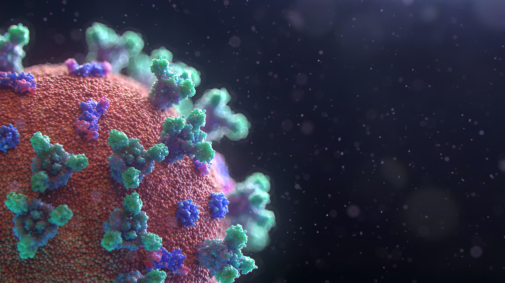

Timeline
Beginning
(current)
Ages 3 to 6
Ages 7 to 12
Ages 13 to 17
Ages 18 to 21
Promote

The Lasting Impact The COVID-19 Pandemic Will Have on Mental Health
Learn how the Coronavirus has affected the mental health of children through different age groups.
By Breece Parsons
Get Started